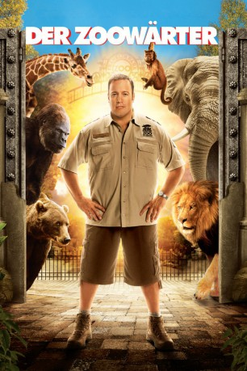
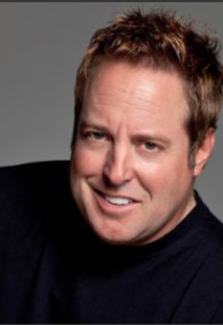

#902 Der Zoowärter
Alternativ: Zookeeper
 
 IMDB-Wertung: 5.2 / 10
IMDB-Wertung: 5.2 / 10  Metascore: 30
Metascore: 30 
Weil sie ihrem über alles geliebten Zoowärter Griffin dabei helfen wollen, seine Traumfrau zurückzugewinnen, tun die Tiere des Franklin Park Zoos das Undenkbare - sie enthüllen ein Geheimnis, das sie vor den Menschen bislang immer verborgen gehalten haben: Sie können sprechen! Gemeinsam wollen sie Griffin nun die Grundregeln des Paarungsverhaltens und die Kunst der Verführung beibringen. Auf ihre ganz eigene Art …
Jahr: 2011
Dauer: 102 Minuten
FSK: 0
Land: USA Studio: Columbia PicturesTonspuren: DTS - ,
Untertitel: Deutsch,
Auflösung: 1080p (1920x800) Größe: 5621 MB
Genre: Komödie, Familie, Liebe
Regisseur:  Frank Coraci
Frank Coraci
Drehbuch: Nick Bakay, Rock Reuben, Kevin James, Jay Scherick, David Ronn
Soundtrack: Rupert Gregson-Williams
Darsteller:
 Kevin James als Griffin Keyes
Kevin James als Griffin Keyes Rosario Dawson als Kate
Rosario Dawson als Kate Leslie Bibb als Stephanie
Leslie Bibb als Stephanie Ken Jeong als Venom
Ken Jeong als Venom Donnie Wahlberg als Shane
Donnie Wahlberg als Shane- Joe Rogan als Gale
 Nat Faxon als Dave
Nat Faxon als Dave- Steffiana De La Cruz als Robin
- Nick Bakay als Franky
 Jackie Sandler als TGIF Waitress
Jackie Sandler als TGIF Waitress Nicholas Turturro als Manny
Nicholas Turturro als Manny- Thomas Gottschalk als Jurgen
 Brandon Keener als Nimer
Brandon Keener als Nimer-  Gary Valentine als Pizza Guy
- Tanner Blaze als Little Boy at Zoo
- Gino Falsetto als Valet
- Katrina Begin als Secretary at TGIF
- Matthew R. Staley als Glenn
- Tara Giordano-Dean als Shana
- Juston McKinney als Upscale Restaurant Manager
 Nick Nolte als Bernie the Gorilla
Nick Nolte als Bernie the Gorilla Adam Sandler als Donald the Monkey
Adam Sandler als Donald the Monkey Sylvester Stallone als Joe the Lion
Sylvester Stallone als Joe the Lion Cher als Janet the Lioness
Cher als Janet the Lioness- Judd Apatow als Barry the Elephant
 Jon Favreau als Jerome the Bear
Jon Favreau als Jerome the Bear Faizon Love als Bruce the Bear
Faizon Love als Bruce the Bear Maya Rudolph als Mollie the Giraffe
Maya Rudolph als Mollie the Giraffe- Bas Rutten als Sebastian the Wolf
 Don Rickles als Frog
Don Rickles als Frog- Jim Breuer als Crow
 Tom Woodruff Jr. als Bernie the Gorilla
Tom Woodruff Jr. als Bernie the Gorilla Charlie Alejandro als Wealthy Zoo Patron , uncredited
Charlie Alejandro als Wealthy Zoo Patron , uncredited Bart the Bear als Jerome the Bear , uncredited
Bart the Bear als Jerome the Bear , uncredited Brina als Party Guest , uncredited
Brina als Party Guest , uncredited Danny Connelly als Zookeeper , uncredited
Danny Connelly als Zookeeper , uncredited Christopher J. Davis als Bar Fly , uncredited
Christopher J. Davis als Bar Fly , uncredited- Simba Dibinga als Simba the Zookeeper , uncredited
 John Franchi als Construction Architect , uncredited
John Franchi als Construction Architect , uncredited- J. Gulinello als Waiter , uncredited
 London Hall als Jogger / Zoo Patron / Mother , uncredited
London Hall als Jogger / Zoo Patron / Mother , uncredited- Michael J Hammett als Zoo Patron , uncredited
 Mackenzie Hawe als Child at Zoo , uncredited
Mackenzie Hawe als Child at Zoo , uncredited Gina Hernandez als Wedding Attendee , uncredited
Gina Hernandez als Wedding Attendee , uncredited- Kahdiak als Photographer , uncredited
- Krystal Kenville als Club Goer , uncredited
- David A. Kirsch als Construction Worker , uncredited
 Ren Knopf als Driver / Businessman , uncredited
Ren Knopf als Driver / Businessman , uncredited Dan Marshall als Zoo Visitor / Father with Baby in Sling , uncredited
Dan Marshall als Zoo Visitor / Father with Baby in Sling , uncredited Crystal the Monkey als Donald the Monkey , uncredited
Crystal the Monkey als Donald the Monkey , uncredited
Datei: X:\2011(N-Z)\Zoowärter, Der (2011, FSKo.Al., 1920x800).mkv seit 16.04.2015
Festplatte: HD 2011(G-Z)
 Es gibt insgesamt 132 Filme in der Gruppe '2011(N-Z)'
Es gibt insgesamt 132 Filme in der Gruppe '2011(N-Z)'